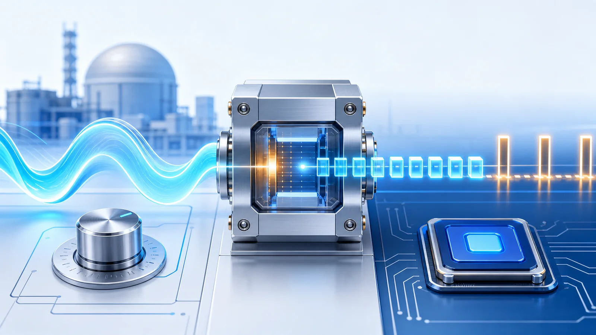
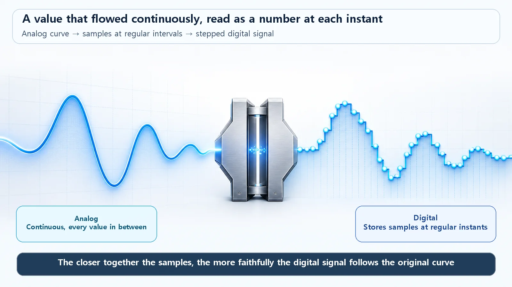
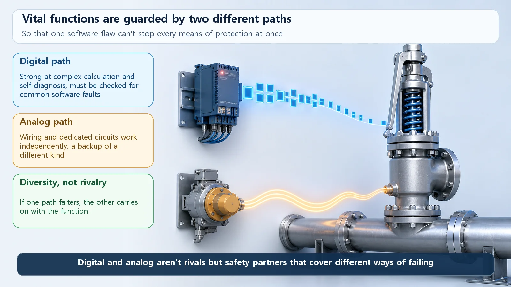

Reactor Types & Plant Systems · 198
Turn the Knob or Press the Button? — Analog Control and Digital Control, Two Ways a Nuclear Plant Handles Signals
A smooth volume knob versus a numbered button: the difference between analog and digital control, and why nuclear plants mix the two.

Analog control turns a measurement into a continuously varying electrical signal, such as a 4–20 mA current, that dedicated hard-wired circuits respond to at once. Digital control samples the same signal at regular intervals, turns it into numbers, and lets software on a computer decide. Digital brings flexibility, self-diagnosis and integrated information, but also the risk of a software common-cause failure, so nuclear plants protect key safety functions with diversity and defense in depth and use both approaches where each fits best.
Old stereos had a volume knob. Turn it gently and the sound swells smoothly, with no jumps. Turn it a tiny bit and the sound grows a tiny bit; where the knob points and how loud it gets move together. Most devices today have a + button instead. Press once and the number goes up one notch, press again and it's one more. The sound climbs "17, 18, 19," step by step.
Both turn the volume up, but one is smooth and the other moves in numbered steps. Surprisingly, the way a nuclear power plant measures values like temperature, pressure and water level, and moves equipment in response, also comes in these two flavors: analog control and digital control. Let's see how they differ and why the difference matters in a nuclear plant.
The knob side: analog control
Analog control turns a physical quantity such as temperature or pressure into an electrical signal that changes continuously. "Continuously" is the key word. If the value rises a little, the signal rises a little; if it dips slightly, the signal dips slightly, with no breaks in between. In plant instrumentation, a 4–20 milliampere (mA) current has long served as the standard for this kind of continuous signal: the bigger the value, the more the current smoothly increases. It's exactly a volume-knob signal.
The signal is handled by dedicated circuits, hardware built from parts such as operational amplifiers and relays to do one job only. A circuit that sounds an alarm when a temperature passes a certain value, a circuit that opens a valve according to pressure: one circuit generally does one thing, and that function is fixed in the wiring. Just as turning the knob immediately raises the volume, the circuit reacts instantly and continuously when a signal arrives. It's simple and intuitive, so following "when this signal comes in, that happens" is relatively easy.
The button side: digital control
Digital control takes the same temperature or pressure signal but chops it at regular time intervals and turns it into numbers. At very short intervals it reads "the value right now is X" and writes it down. The device that converts a continuous signal into numbers is called an analog-to-digital converter. It's the same idea as showing the volume as "18, 19, 20."
Once you have numbers, the computer takes over. A small computer called a microprocessor calculates and decides according to its software and issues commands. This is where the two part ways. In analog control, the function is built into the wiring; in digital control, change the software and you change what it does. A single computer can also handle many tasks at once, check its own health (self-diagnosis), gather lots of information into one display, and crunch complex calculations with ease, much as one smartphone serves as phone, calculator and map.

Why it matters in a nuclear plant
A nuclear plant's instrumentation and control constantly measures the state of the core and plant systems and, when something looks wrong, moves equipment or shuts the reactor down. It is, in a sense, the plant's eyes, ears and hands. Early nuclear plants built most of these eyes, ears and hands in analog form. As semiconductors and computers advanced dramatically, there has been a steady shift to digital, in new plants and in projects to upgrade older equipment, because the advantages — precise calculation, self-diagnosis, integrated information — are significant.
But digitalization brought new concerns along with its benefits. The one discussed most often is software common-cause failure. The term is stiff, but the meaning is simple. In analog circuits, when one part fails, the problem usually stays where it is; the other circuits carry on. But if several devices run the same software, a single hidden flaw in that software could cause trouble in many places at once. It's a bit like planting seeds all copied from one batch: if that batch carries a disease, the whole field gets sick together.
So for its most important safety functions, a nuclear plant relies on diversity and defense in depth. It layers methods of different kinds so that one shared flaw can't bring everything down at once, for example by keeping a separate actuation means of a different nature alongside the digital system. Detailed regulatory requirements and system names differ by country and plant, so the principle to remember is simply this: layer different methods.

Common mix-ups
First, it's easy to think "digital means automatic, analog means manual." That isn't true. Analog control can run automatically without human hands, and operators still watch and step in on digital control. The distinction is about how the signal is handled, continuous or as numbers, not about automatic versus manual.
Second, beware of "digital is newer, so it's always better, and analog is outdated." Analog has clear strengths: it's simple, an individual fault doesn't easily spread sideways, and its behavior is relatively easy to trace and verify. On the other hand, its parts drift slowly out of calibration over the years, it needs recalibration, and it's weak at complex calculation and pulling information together. Digital is flexible and smart but carries new homework such as common-cause failure, and it must be verified far more rigorously, software included. Neither wins on every count; each has its own strengths and its own cautions. That's why real plants don't set them against each other but mix them to suit each job.
Put very simply: a curve and a staircase
No equations needed, just one picture. An analog signal is a curve that continues without a break over time. A digital signal places dots on that curve at regular intervals and joins them into a staircase. Make the spacing between dots very fine, and the staircase becomes almost indistinguishable from the original smooth curve. That is how digital handles a continuous world: it cuts the world into small numbered pieces, but fine enough to bring the original shape back.
Today's summary
- Analog control turns a physical quantity into a continuous signal that dedicated circuits respond to instantly and proportionally (a volume knob); digital control turns that signal into numbers that a computer calculates and judges with software (a button).
- Digital is flexible (functions change with software) and smart (self-diagnosis, integrated information, complex calculation) but brings the new issue of software common-cause failure; analog is simple, intuitive and keeps individual faults contained, but has less flexibility and computing power. Neither is always superior.
- Nuclear plants protect key safety functions with diversity and defense in depth, layering different methods so that one shared flaw can't take everything down, and mix both approaches where each fits best.
- "Digital = automatic and better, analog = manual and outdated" is a common misconception; the real difference is whether the signal is handled continuously or as numbers.
Knob or button, the goal is the same: read the plant's condition accurately, and make sure every function does its job without fail when it's needed.